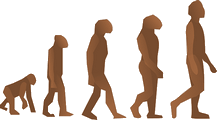

Construction du réseau
Machines virtuelles et services réseau

4 ETAPES LOGIQUESS
La construction suit les 4 étapes titrées ci-dessous. Les 3 premières concernent la création des différentes machines virtuelles et la quatrième concerne l'installation des services sur le réseau.
1 ) Installation de l'outil de virtualisation
Commencez par installer le logiciel VirtualBox.
☛ Mémento VirtualBox
2 ) Création des serveurs virtuels
Puis créez, comme le montre la maquette, les serveurs des zones LAN, WAN et DMZ.
{kind=link}
☛ Mémentos srvlan / srvsec / srvdmz
3 ) Création des clients virtuels situés en zone LAN
L'ensemble comprend 2 VM Debian et 1 VM Open vSwitch incluant 2 conteneurs LXC.
☛ Mémentos Clients / Open vSwitch
4 ) Installation des services DNS, DHCP, WEB ...
Suivez, dans l'ordre, la liste des mémentos du blog pour au final pouvoir exploiter un petit réseau local virtuel.
L'idéal pour réaliser tout ceci est de disposer d'un petit serveur basse consommation avec suffisamment de mémoire pour supporter la construction du réseau.
Ceci vous évitera de relancer vos VM chaque fois que vous souhaiterez travailler sur le réseau.
Le mémento Contrôle à distance est là pour que vous puissiez piloter vos VM depuis un PC situé sur le même réseau local que le serveur ou PC hôte de VirtualBox.
Ce réseau virtuel est là pour aider tout débutant souhaitant disposer d'un outil lui permettant d'aborder l'administration réseau.
Bon courage !